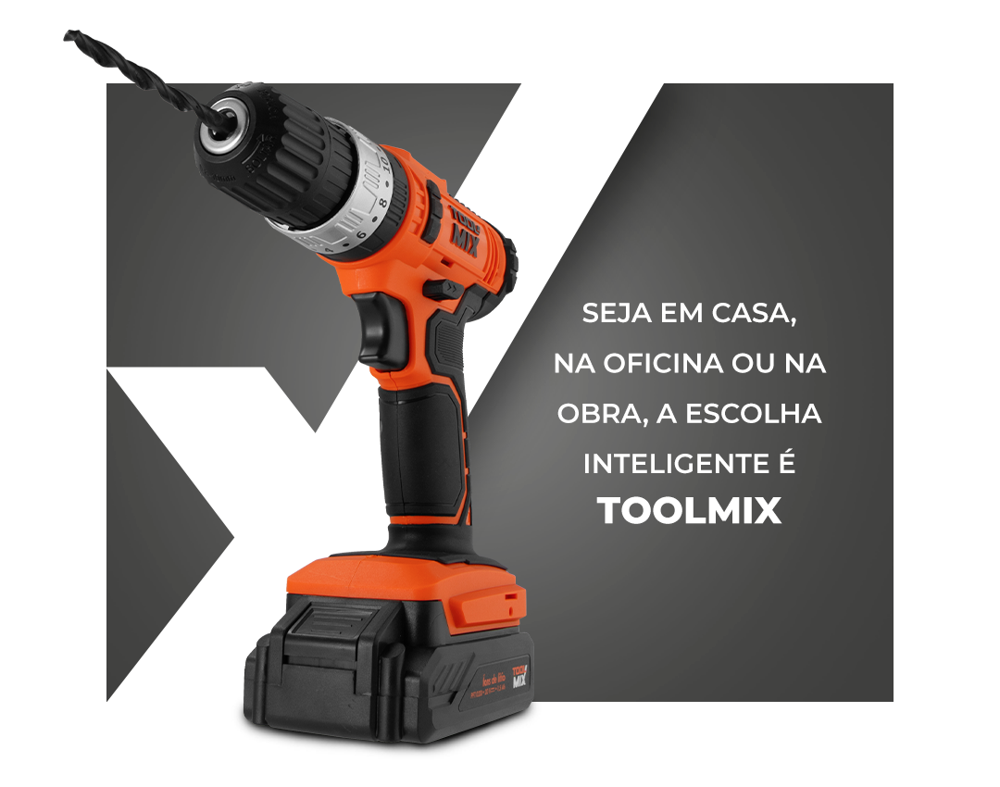

Conectada às novas formas de trabalhar, a TOOLMIX é a marca que une tecnologia, eficiência e custo-benefício real em ferramentas e equipamentos pensados para quem valoriza os resultados com muita praticidade. Com mais de 20 anos de experiência no mercado, a TOOLMIX evoluiu para acompanhar o ritmo e as inovações que transformam o nosso dia a dia — para quem busca soluções inteligentes, fáceis de usar e com desempenho de verdade.
E agora, com a nova linha de Ferramentas a Bateria TOOLMIX, o trabalho ganha mais autonomia, mobilidade e design funcional, entregando máxima performance em qualquer lugar.

Da construção civil à manutenção, reparos e instalações, cada produto TOOLMIX é projetado para oferecer potência, resistência e liberdade de movimento, sem esforço! Mais do que ferramentas, a TOOLMIX representa uma mentalidade smart: fazer mais por menos! Com simplicidade e os melhores resultados,, você investe em produtos que realmente agregam valor em tudo o que faz. Por isso, cada lançamento carrega a missão de simplificar o dia a dia de quem transforma, constrói e realiza. Sempre melhor, sempre TOOLMIX!
ONDE COMPRAR
Encontre produtos e acessórios TOOLMIX
com exclusividade nas lojas físicas e também no
site oficial da Ferramentas Gerais.
ENTRE EM CONTATO
Dúvidas sobre os produtos TOOLMIX?
Fale agora com nossa
Assistência Técnica!